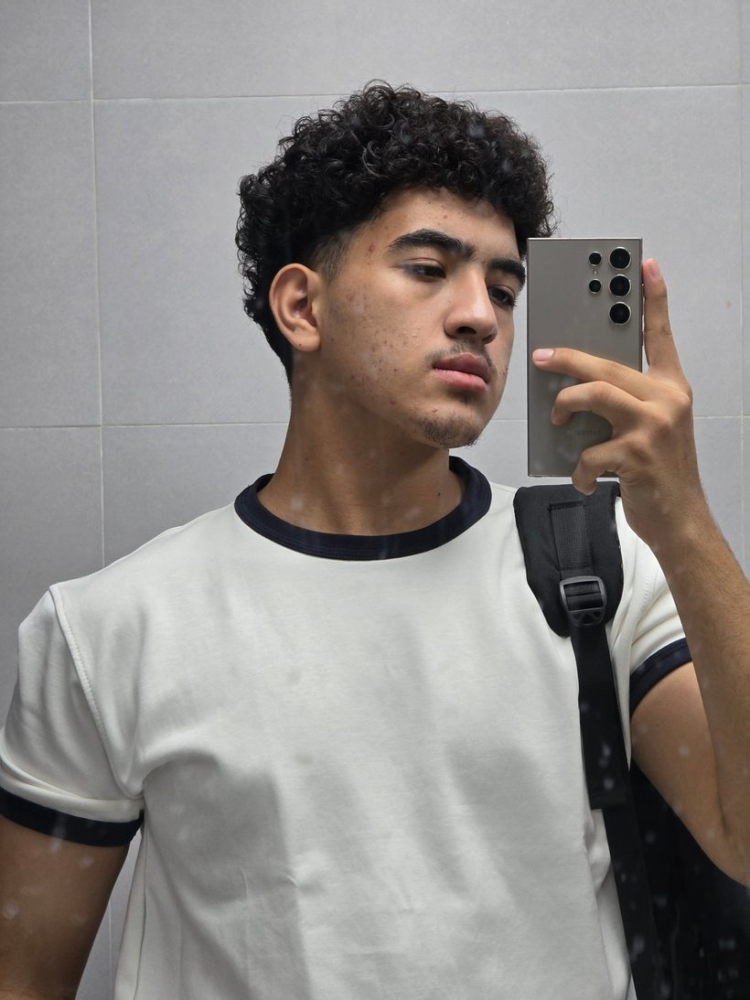
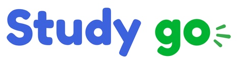
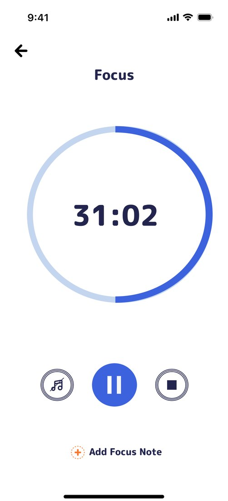
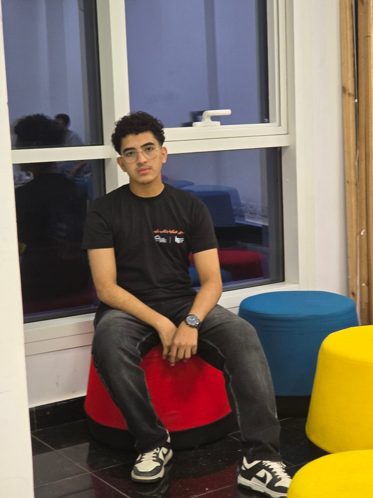
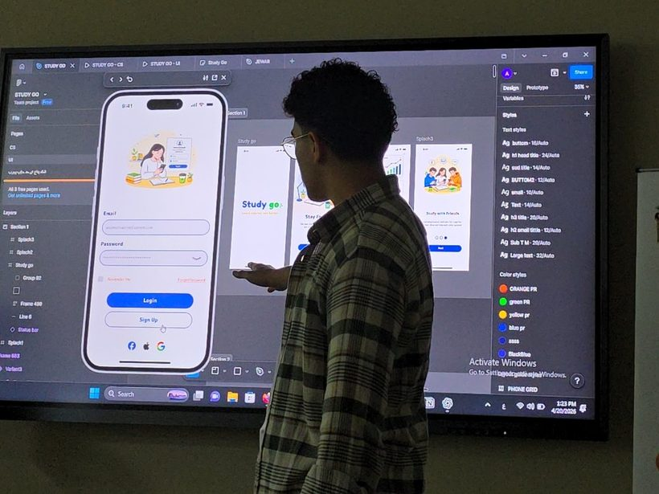
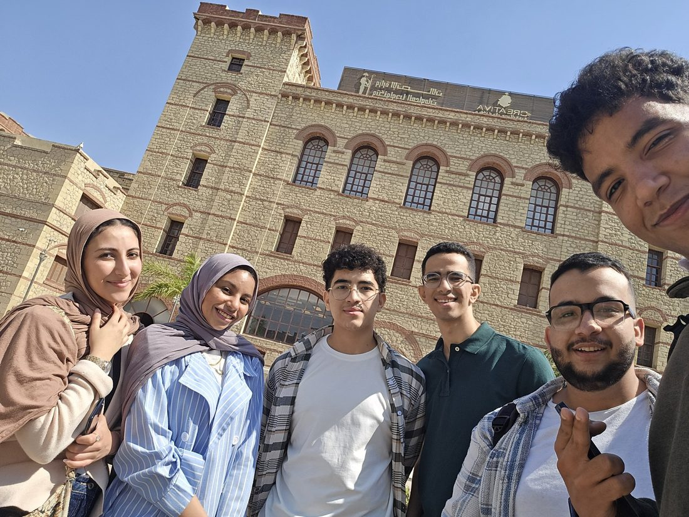

UI/UX Design
- Figma
- Wireframing
- Prototyping
- Design Systems
- User Research
Exploring the intersection of design, code, and AI to build more meaningful digital experiences.

I'm Kareem, a Computer Science student at MUST, exploring the relationship between design, programming, and AI. I enjoy learning how technology works and how thoughtful design can make digital experiences easier to understand and use.
My journey combines UI/UX design, programming, and ongoing learning in Data Science. I'm interested in turning ideas into useful digital experiences, one project and one lesson at a time.
More About My JourneyA growing toolkit across creative thinking, programming, and computer science.
Skills shown reflect my current learning and practice; proficiency continues to develop.
A UI/UX project where ideas meet practical design.

Student-Focused Learning App · UI/UX design · Figma
A student-focused learning app concept designed to help users organize study routines, track progress, and stay consistent with their goals. A solo project: a high-fidelity Figma prototype of 15+ screens.



I took part in IEEE Xtreme 19.0, a 24-hour global programming competition with 19,000+ participants, as team leader of team bangGOAT. It was a chance to practice competitive programming, work as a team, and solve problems under time pressure.
Participation only. No ranking or win is claimed.

Certificates
An ongoing timeline of learning, practice, and exploration.
Misr University for Science and Technology, Faculty of Computers and Information.
A solo UI/UX project designed in Figma. See the project
Team bangGOAT, as team leader. Participation in a global 24-hour programming competition.
National Telecommunication Institute, Egypt's Ministry of Communications and Information Technology. Wireframing, prototyping, user flows, Figma, design systems, usability, accessibility.
Digital Egypt Pioneers Initiative: training in progress.


Notes from the learning process. Planned topics, not yet published.
Open to learning opportunities, thoughtful collaborations, and conversations about design and technology.